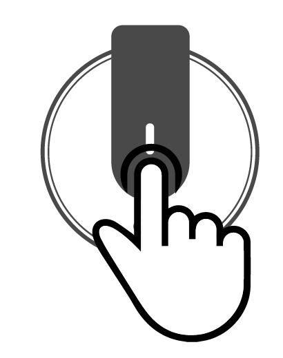

機器の動作
振動設定

一定時間悪い姿勢を維持するとRESEEDが振動でお知らせします。
機器のボタンを押して、振動アラームを設定することができます。
ボタンを短く一度押すと振動アラームがオンになり、3秒間押すと、振動アラームがオフになります。
基準姿勢補正
ボタンを短く一度押すと、基準姿勢を補正します。
機器の検知が正しくないと思うのなら、機器を着用して正しい座った姿勢でボタンを短く1回押してください。
機器のボタンを押して設定する方法以外にも、アプリで簡単に基準姿勢を設定できます。